Draft 4: the full materials passage is removed. No replacement feature demo. The edit gives the anchored worlds, blood consequence, botanical build and final identity more room, and finishes two seconds earlier.
A low-resolution draft (960 × 540, 30 fps, exactly 38.000 s, 1,140 frames) with a synthesized sound design placed on the picture's own cue frames. Every picture frame comes from the real application and renderer; film-only layers are camera moves, retiming, motion blur, transition masks and the credit line. No full-resolution render has been made.
| Passage | Time | Frames | What the motion shows |
|---|---|---|---|
| Open / type / grow | 0.00 s – 5.60 s | 0–167 | Real UI holds for 0.67 seconds, then typing begins directly. The native garden grows from in bloom. |
| The living words | 5.60 s – 9.60 s | 168–287 | Matched stage handoff, botanical camera travel and the restrained rose beauty shot. |
| A visitor, a wound | 9.60 s – 17.00 s | 288–509 | Approved butterfly contact, bead and falling drop. The native blood consequence and contour transition have more room. |
| Five worlds | 17.00 s – 23.50 s | 510–704 | Ivory, Old rose, Pink & black, Black rose and Silver. The same phrase stays anchored; the strongest palettes breathe longer. |
| Letterforms and palette | 23.50 s – 29.00 s | 705–869 | Cormorant and Bodoni hold longer, then Unifraktur and the cobalt/champagne world. Same phrase center and baseline; native recolour into crimson. |
| Botanical abundance | 29.00 s – 33.00 s | 870–989 | The existing garden grows continuously, peaks, then recovers the phrase. A native passing petal carries the identity. |
| ROSE GARDEN | 33.00 s – 38.00 s | 990–1139 | The approved enlarged lush crimson portrait fully grows and blooms before the longer resolved hold. Exact attribution appears afterward. |
Open the twelve current review keyframes.
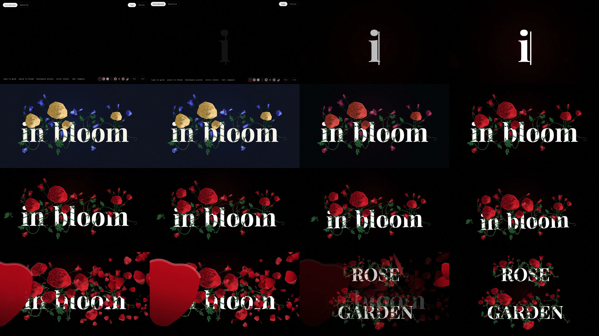
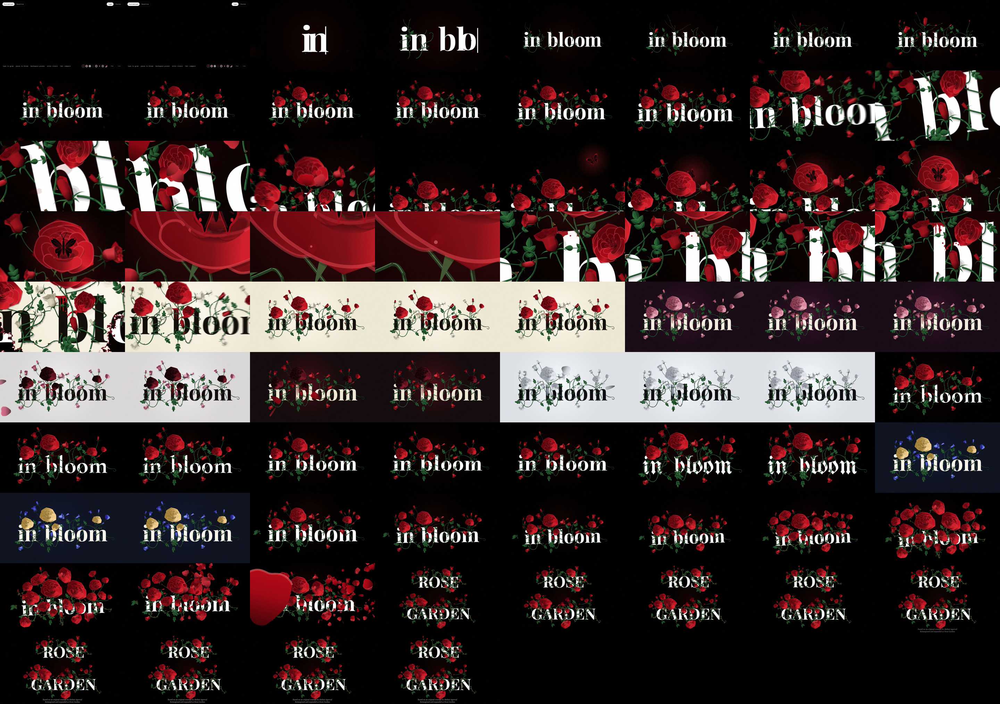
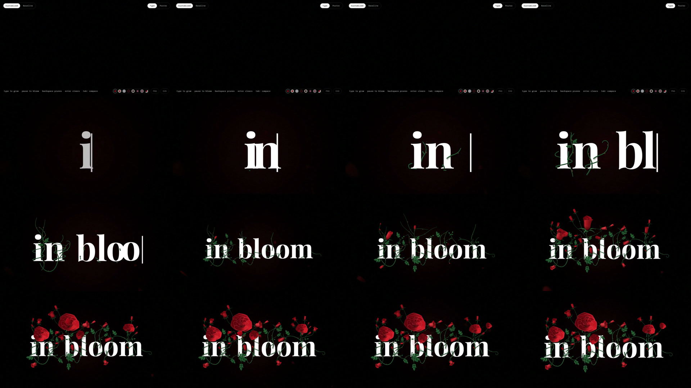
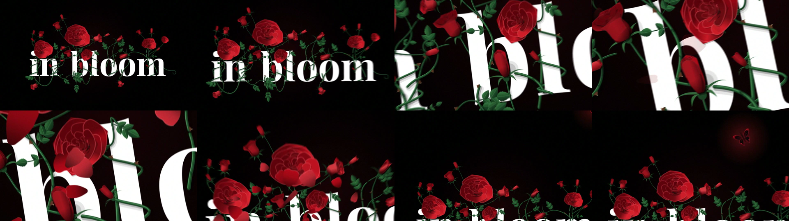
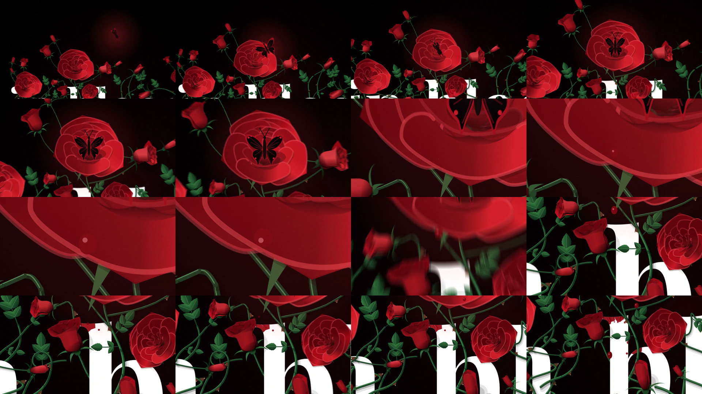
f360, bead f371, release f405, impact f420 (14.00 s, on beat 28). Native simulation runs 1–2 steps per frame from bite to drop so each beat reads.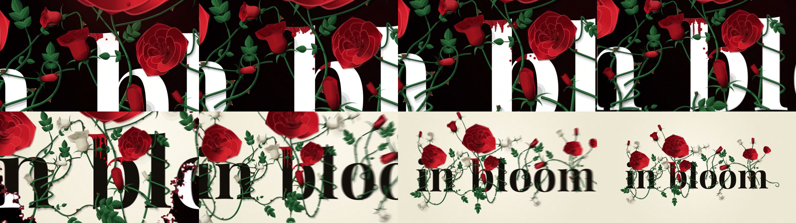
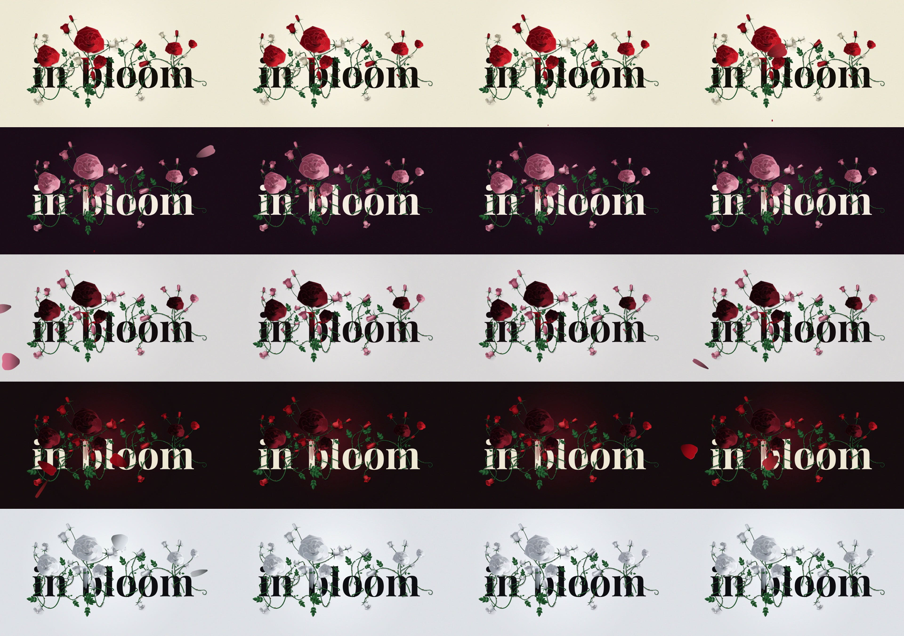
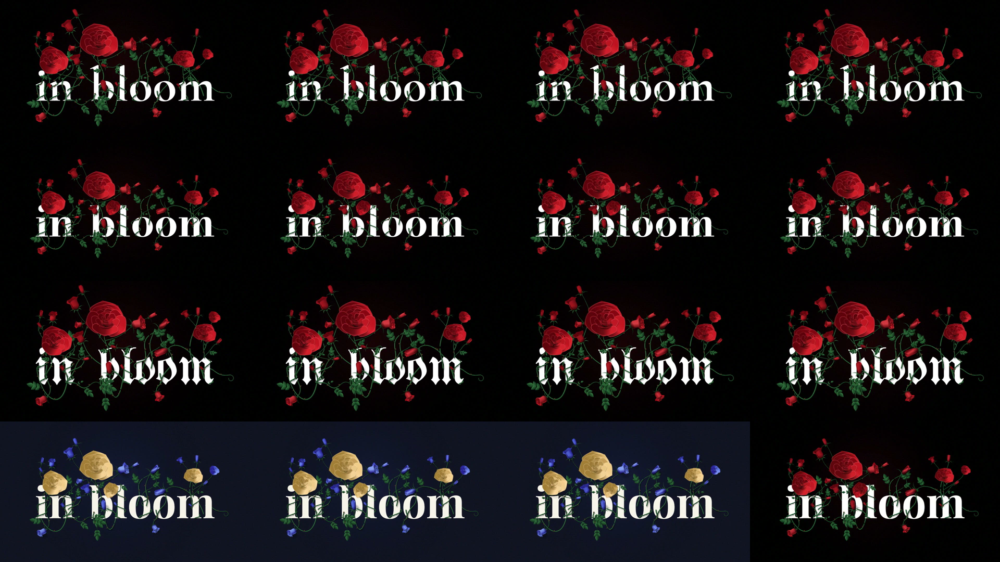
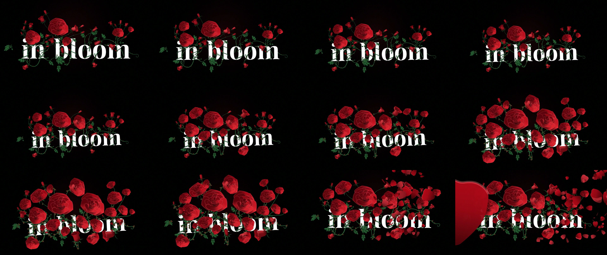
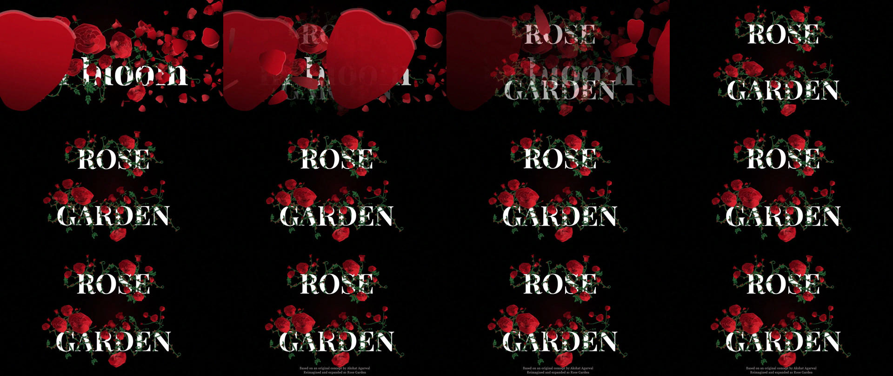
Plan the 16:9 master and a separately framed 1:1 social version. A 9:16 version needs its own native camera pass: center crops truncate the phrase, butterfly approach, final lockup and attribution. No alternate continuous versions have been rendered. Inspect source / square / vertical crop stills.
Original synthesized sound sketch for timing review; production music and recorded foley remain unfinished. 120 BPM; the pulse begins on the impact accent and carries the montage. Encounter cues come from the render: {"bite":360,"bead":371,"release":405,"impact":420,"drips":[442,445,452,459,465,469,473,493]}.
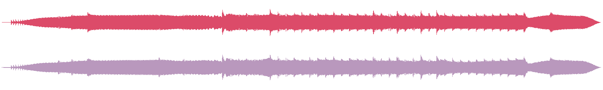
| Frame | Time | Sound |
|---|---|---|
| 14 | 0.47 s | app opens: close air |
| 21 | 0.70 s | first key |
| 51 | 1.70 s | last key |
| 52 | 1.73 s | stem friction: vines find the glyphs |
| 86 | 2.87 s | leaf unfurl ticks |
| 110 | 3.67 s | swell pulse |
| 138 | 4.60 s | first rose opens |
| 165 | 5.50 s | living words resolve: chord |
| 196 | 6.53 s | camera glides into the coil |
| 248 | 8.27 s | drifting petals |
| 256 | 8.53 s | rise to the rose |
| 296 | 9.87 s | butterfly wingbeats approach |
| 300 | 10.00 s | slow living pulse |
| 346 | 11.53 s | wings settle |
| 346 | 11.53 s | landing: foot touches petal |
| 360 | 12.00 s | bite: close wet contact |
| 371 | 12.37 s | bead gathers (quiet) |
| 403 | 13.43 s | bead release breath |
| 405 | 13.50 s | release: surface tension lets go |
| 406 | 13.53 s | fall |
| 420 | 14.00 s | IMPACT: first full rhythmic accent |
| 422 | 14.07 s | impact glass tail |
| 425 | 14.17 s | viscous trace on the stroke |
| 442 | 14.73 s | drips keep falling (native) |
| 469 | 15.63 s | blood wipe: reverse swell |
| 510 | 17.00 s | first world arrives |
| 510.5 | 17.02 s | look: ivory |
| 555.5 | 18.52 s | look: oldrose |
| 600.5 | 20.02 s | look: pinkblack |
| 625 | 20.83 s | petals pass the lens |
| 630 | 21.00 s | petal pass: soft thud |
| 630.5 | 21.02 s | look: blackrose |
| 660.5 | 22.02 s | look: silver |
| 699 | 23.30 s | anchored font change: Silver to Cormorant |
| 744 | 24.80 s | anchored font change: Cormorant to Bodoni |
| 789 | 26.30 s | anchored font change: Bodoni to Unifraktur |
| 819 | 27.30 s | anchored font change: Unifraktur to the custom palette |
| 832 | 27.73 s | custom world: warm chord change |
| 870 | 29.00 s | botanical riser: garden builds |
| 938 | 31.27 s | gust carries petals |
| 975 | 32.50 s | petal storm flutter |
| 990 | 33.00 s | cut to the title: the hush |
| 995 | 33.17 s | the name grows |
| 1040 | 34.67 s | ROSE GARDEN fully arrived: warm major resolve |
Editorial sound review: retain the keystrokes, contact/release/impact chain, anchored montage accents, botanical build and final warm resolve. All material textures, impacts, runoff cues and the former push into the stem are removed. Existing cue families are retimed to this edit; no new events added. Audio monitoring is unavailable in this environment: these arrangement refinements and sync checks do not establish a finished mix or replace a listening review of this draft.
Each row looks for the loudest 20 ms window within -30 to +120 ms of the picture cue and compares it with the quiet before it. A positive number means an accent sits on the cue; the offset says how far from the exact frame it peaks.
| Cue | Frame | Time | Accent over the sound before it | Peak offset |
|---|---|---|---|---|
| bite | 360 | 12.00 s | 5.3 dB | -20 ms |
| release | 405 | 13.50 s | 3 dB | 20 ms |
| IMPACT | 420 | 14.00 s | 11.7 dB | 0 ms |
| first world (blood contour ends) | 510 | 17.00 s | 9.9 dB | 0 ms |
| anchored Look recolour | 555 | 18.50 s | 4 dB | 20 ms |
| native petal pass | 630 | 21.00 s | 8.3 dB | 20 ms |
| font / world: font-cormorant | 705 | 23.50 s | 7.9 dB | 0 ms |
| font / world: font-bodoni | 750 | 25.00 s | 12.3 dB | 0 ms |
| font / world: font-unifraktur | 795 | 26.50 s | 14 dB | 20 ms |
| font / world: custom | 825 | 27.50 s | 11.3 dB | 20 ms |
| cut to the title (storm) | 990 | 33.00 s | 6.3 dB | 0 ms |
| ROSE GARDEN arrived (resolve) | 1040 | 34.67 s | 9.3 dB | 73 ms |
Preservation and edit audit · Picture and sound QA. The approved opening and beauty clips are identical frame for frame to draft 3. The application, V1, V2, Tender Violence and approved storyboard sources are preserved.
| Check | Result |
|---|---|
| Frame count | 1140 of 1140 |
| Material showcase removed | All four passages removed; no replacement demonstration |
| Identity resolved before hold | Complete growth and bloom before the longer hold |
| Typical adjacent-frame difference | 4.63 |
| Segment seams (difference across each boundary) | beauty @168: 0.27 · encounter @288: 0.96 · looks @510: 1.6 · font-cormorant @705: 200.59 · font-bodoni @750: 13.74 · font-unifraktur @795: 17.49 · custom @825: 35.07 · botanical @870: 1.02 · identity @990: 7.16 |
| Black / freeze | black_start:0.733333 black_end:0.9 black_duration:0.166667 |
| Loudness | -16.1 LUFS, -2.3 dBTP, LRA 3.4 LU |
The opening black-detector flag covers the thin first i/caret during the UI push. Encoded opening frames were visually inspected: typing has begun, with no empty interval before the first key. The detector classifies frames with over 98% dark pixels as black.
Final identity: ROSE GARDEN · Based on an original concept by Akshat Agarwal · Reimagined and expanded as Rose Garden